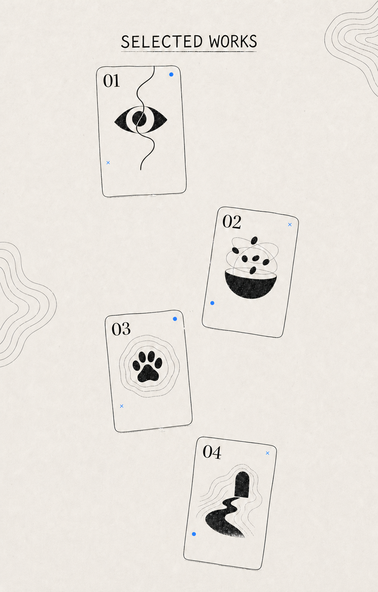

2026.05
至今
至今
蔚来
我更关心数据何时可信、系统如何运行，以及用户此刻真正需要判断什么。
工业设计的训练让我习惯从用户、场景和物理产品出发理解问题。进入产品实践后，我意识到，决定体验的不只是界面与形态，更是背后的产品定位、系统规则和能力边界。
我面对过传感器偏差、环境干扰、续航、重量与通信方式等真实约束。我习惯把模糊需求拆成可执行、可验证的规则，再推动团队完成方案收敛。

进入项目区后蓝色路径会依次经过项目卡片，卡片会短暂亮起；移入卡片查看项目名称和标签。
我在不同团队里承担的角色，以及持续积累的产品判断。
蔚来
70mai
Dickies / 李宁
工业设计训练，和后来对系统与产品的持续学习。
2024 - 2027
机械硕士
研究方向：工业设计工程
记录 012020 - 2024
工业设计 · 学士
记录 02数字分身 / 交流预留
可以和我的数字分身聊项目、取舍，以及我如何把复杂问题拆成可执行的方案。
从一个项目开始，问我为什么这样判断。